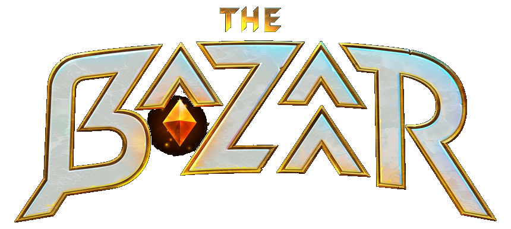

PROJECT PTR
Real stakes for the test realm: a live competitive ladder built to put The Bazaar's new tournament feature through its paces.
Every new season resets MMR to 500. Standings refresh automatically.
What is Project PTR?
An independent, community-run event that brings real competition to The Bazaar's test realm while the new tournament feature gets put through its paces.
The Bazaar's new in-client tournament feature is in testing on the test server, but a test realm usually gives people very little reason to actually grind. Project PTR fixes that. It wraps the testing in real competition: a live ladder, a public leaderboard, and a finals, so the community has a reason to show up, and the new feature gets battle-tested under genuine pressure.
Every match runs through a custom Discord bot that organizes lobbies and calculates a true skill rating for each player. Standings update live on this site throughout the event, so anyone can follow the race for the top while the tournament tech gets its workout.
It's meant to be fun first. Reputation doesn't seed you. Results do. Newcomers share lobbies with established names, every win lands on the board for all to see, and the whole thing doubles as the most useful kind of stress test: a lot of people genuinely trying to win.
Open Field
Newcomers and top players in the same lobbies, so anyone helping test can climb the board.
Live MMR Ladder
A custom bot tracks every match and updates a transparent rating in real time.
Bugs, Not Exploits
It's a test realm, so bugs are part of the fun and fair game. Deliberately abusing them is not, and gets you removed.
Format
Play the test realm through the new tournament feature. Climb the ladder. Make the finals.
The Ladder
Registered players queue into bot-organized lobbies on the test realm, run through The Bazaar's new tournament feature. Every match adjusts your MMR. Play as much as you like, and the ladder rewards both consistency and the quality of your opposition.
The Cut
When the ladder window closes, the top finishers by MMR advance. Everyone else locks in their final placement and seeding for next time.
The Finals
The qualified field plays a multi-game finals with reseeding between rounds, decided by a checkmate-style points race, where a player must take a clear win to claim the title.
MMR & Scoring
Everyone starts each run at the same baseline. Your rating moves with your placement in every lobby, and the size of each swing is weighted by how strong your opponents are. Beating a tough lobby is worth more, and losing to one costs less. This rewards seeking out the hardest games rather than farming easy ones.
How to Play
All results come straight from the Bazaar. There is no manual self-reporting.
Before Your First Game
You need two things: test realm access and your in-game name linked.
For the test realm, right-click The Bazaar in your Steam library, go to Properties, then Game Versions and Betas, and enter this code: 17IR8wb70MJOxCCh. You will need to register a new account when you first load in. (Steam only for now.)
For your name, either use /add-account in Discord or claim it on this site under the Account tab. The bot needs your exact in-game Bazaar username to match results back to you. If you skip this step, you'll be prompted the first time you try to host, join, or queue.
Option 1: Custom Lobby (Unranked)
Host. Run /host to create a lobby. The bot posts a lobby message with Join, Invite, and Start buttons. There's no join code for players, they're invited by in-game name.
Fill. Players click Join lobby on the message to get on the roster. Use /my-lobbies or /lobby to check details anytime.
Invite and start. The host clicks Invite to Bazaar to send in-game invites to the roster, then Start lobby once everyone's present in the Bazaar.
Finish and record. After the tournament, the host runs /import-results. The bot pulls the final standings directly from the Bazaar, matched by each player's in-game name. Press Confirm & finalize and it's recorded. Works for players who haven't linked Discord too; their results attach automatically once they /add-account that name later.
Custom lobbies are always unrated. They show in match history and hero stats but never move your rating. Cancel anytime with /cancel-lobby.
Option 2: Matchmaking (Ranked)
Queue. Run /queue from any channel. Check the queue with /queue-status, or drop out with /leave-queue.
Get matched. The bot checks every ~30 seconds and groups 8 players by rating. When a match forms, it creates the Bazaar tournament and invites everyone automatically. An announcement posts in each channel the matched players queued from.
Play. Open the Bazaar and join the tournament. The lobby auto-starts once everyone's present (or after a few minutes if at least half are in). No buttons to press.
Done. Results are pulled and ratings applied automatically when the game ends. No /import-results needed (though the host can run it to finalize early).
Matchmaking is the only ranked mode. Rating changes happen exclusively through /queue. Queue tickets expire after 30 minutes if no match forms.
Other Useful Commands
Play a tournament in-game outside the bot? It gets recorded automatically on a regular sweep, so it still shows up in hero stats and match history as an unranked game. No command needed.
/tournament-results gives a read-only view of any tournament's standings pulled live from the Bazaar servers.
/rating, /leaderboard, /hero-stats, and /history let you check standings and stats from Discord.
The bot works from any Discord server. You don't need to be in the Bazaar Discord server to play. Invite the bot to your own server and use all the same commands. Your rating and match history carry across servers.
Connect Your Name
Sign in with Discord and link your in-game name so your results are tracked on the ladder.
Profile
Career stats, recent games, and hero usage. Tap any player on the ladder to view theirs.
Hero Stats
Win rates, average placement, and pick rates across every hero.